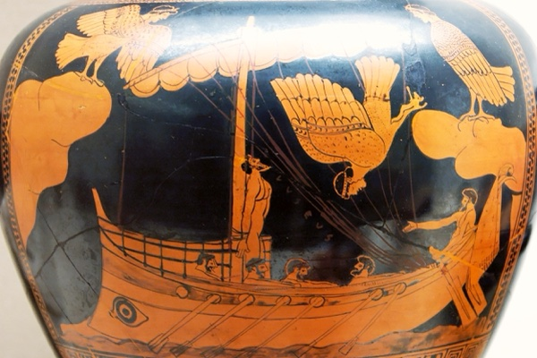
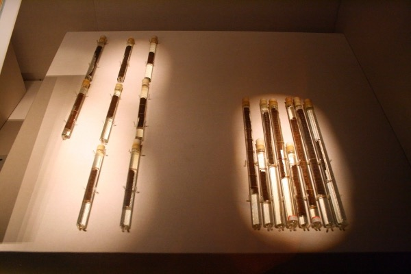
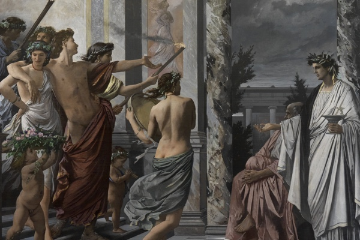
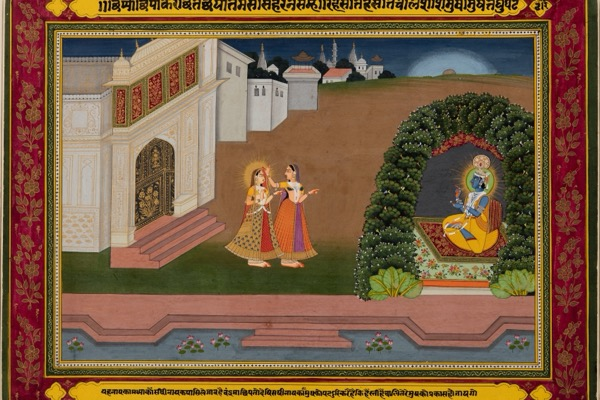
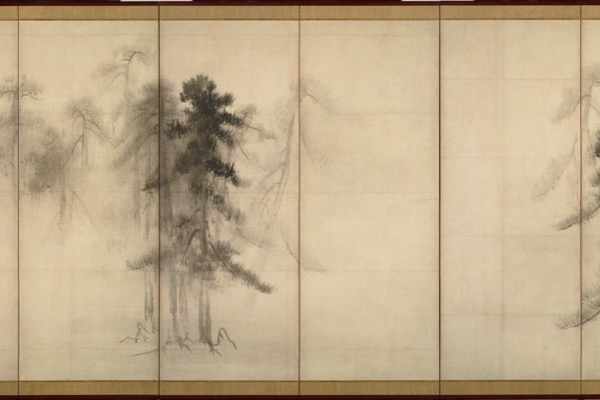

-

The Odyssey, the Long Way Home
Odysseus survives by lying, waiting, and knowing when to act. Getting back to Ithaca takes more than crossing the sea: he has to recover his place at home.
-

The Art of War, Side by Side
A victory can cost more than it gains. Sun Tzu asks how preparation and knowledge can make fighting unnecessary, with English translations that reveal how much interpretation the advice needs.
-

Plato's Symposium, the Ladder of Love
A dinner party turns into competing explanations of love. Plato gives us the search for an other half, then a stranger proposal: desire can lead beyond any one person.
-

The Kama Sutra, Side by Side
Courtship and marriage occupy much of this book on pleasure. Put the Victorian and modern translations together and you can see how differently they describe the same social world.
-
The Prince, Power Without the Moralizing
A ruler can look merciful and leave people worse off. Machiavelli judges political choices by what they secure, including the cruel ones, and asks how power is kept.
-
The Grand Inquisitor
Jesus returns to Seville, and the Church has him arrested. Dostoevsky's Inquisitor argues that people would rather be fed and told what to believe than be free.
-

In Praise of Shadows
A lacquer bowl looks different in a dim room. Tanizaki asks what electric light has cost Japanese beauty; Okakura approaches related questions through the preparation and drinking of tea.